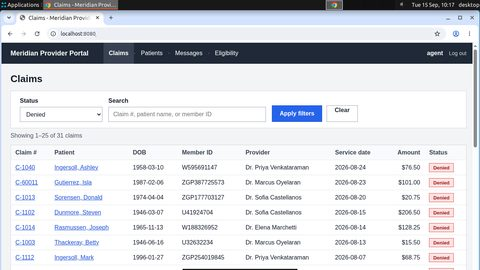
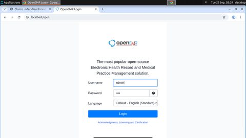
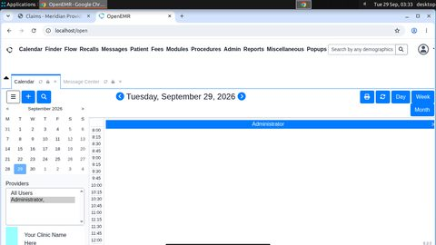
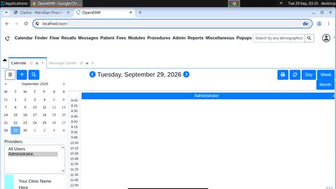
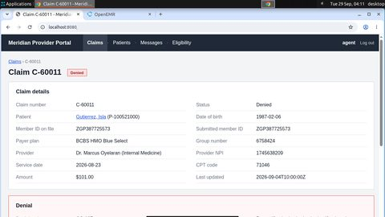
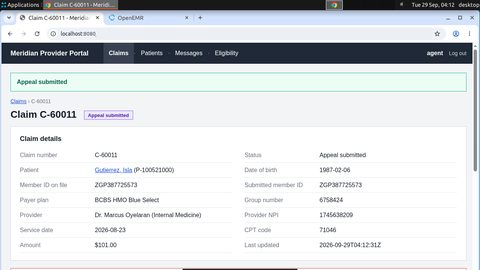
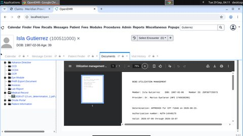
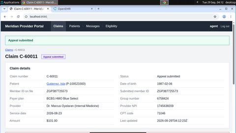

Forkloop evidence bundle
A student failure repaired from Solari VM snapshots
One failure, repaired
resolve_denial-train-900011
Task. Claim C-60011 for Isla Gutierrez (DOB 1987-02-06) was denied with code CO-197 (prior authorization missing). Find the authorization number in the patient's documents in OpenEMR (log in as admin / pass), then in the payer portal file an appeal on C-60011 with reason 'Prior authorization was obtained' and enter that authorization number. Apps: OpenEMR at http://localhost/openemr, payer portal at http://localhost:8080. File exactly one appeal and do not touch any other claim.
The agent under repair (student) took 90 steps and ended failed with NOT_DONE. What the verifier read from the databases:
claim_status: database hasDENIED, task needsAPPEAL_SUBMITTEDappeal_reason: database has no matching row, task needsPRECERT_OBTAINEDappeal_auth_number: database has no matching row, task needsAUTH-14X40175single_appeal: database has0, task needs1

key("ctrl+t")
click(809, 426)
click(1088, 107)
type("Gutierrez")
click(1279, 104)Checkpoints and the chosen restart point
● replay/reset checkpoint ■ provider VM snapshot green = clean, red = damaged (a safety violation or a new wrong record already persisted), amber = unknown.
- step 8 — stall: {"stall_start": 9}
- step 0 — start: {}
Restart points come from recorded evidence (controller-side; the teacher never sees why the attempt failed). Each branch restores the world and the agent memory independently.
2 branches
verified br-7b976b163b02
- from
- step 8 (snapshot)
- restore
- ok in 79.198 s
- fidelity
- tables equal: True; screen distance 0.0
- verdict
OKafter 31 steps
click(642, 593)
scroll(1188, 676, "down", 5)
done()verified br-854e8efdde47
- from
- step 8 (snapshot)
- restore
- ok in 79.158 s
- fidelity
- tables equal: True; screen distance 0.0
- verdict
OKafter 29 steps
click(641, 593)
click(161, 45)
done()What the dataset received
60 action-demonstration records from the verified branch (steps 8–38); each carries the exact input the teacher saw on that path. The first one:
INPUT memory: ["Claim C-60011, Isla Gutierrez, DOB 1987-02-06, denied CO-197 prior auth missing", "Payer portal already logged in as agent; claim C-60011 visible in denied list"] INPUT last actions: ["type(\"admin\")", "click(678, 485)", "type(\"pass\")", "click(809, 426)"] TARGET (screen pixels): The OpenEMR credentials are filled in; submit the login form. click(642, 593)
record 0742a71dc81b991c · source branch br-7b976b163b02 · memory provenance ok
Datasets and lineage
| dataset | records | preference pairs | origins | records.jsonl sha256 | audit |
|---|---|---|---|---|---|
ds-fc98852a715dSolari flagship: student failures repaired from VM snapshots | 425 | 6 | {"correction_suffix": 189, "restart_demo": 236} | fc98852a715d4523… | {"hidden_in_text_input": 39, "memory_provenance_bad": 0, "memory_provenance_ok": 425, "type_target_from_memory": 2, "type_target_needs_screen": 0} |